México · Guadalajara · Passport File 001
Maná
Uma viagem pelo rock latino, pelas canções, pelo palco e pelas pessoas que ajudaram uma identidade mexicana a atravessar continentes.
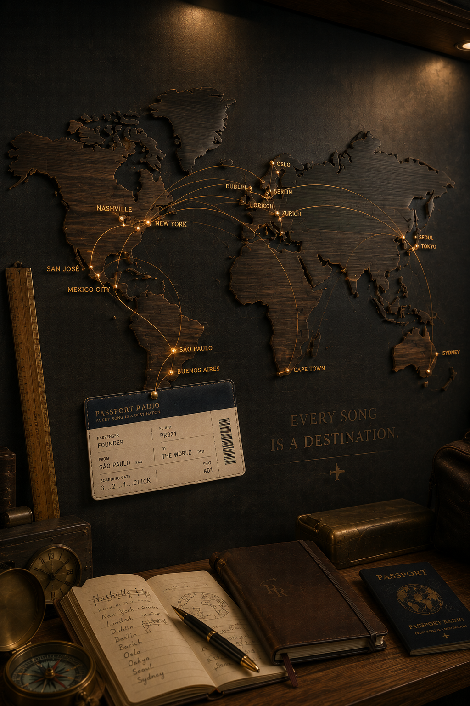
Arquivo mundial da Passport Radio
Países são apenas o começo. Cada destino abre uma rota por cidades, festivais, artistas, instrumentos, apresentações ao vivo e personagens que mudaram a música sem ocupar necessariamente o centro do palco.
Primeiro, a pergunta. Depois: 3... 2... 1... Click!
Mais que países
Um destino da Passport Radio pode começar numa cidade, num palco, num estúdio, numa estrada, num acidente, numa mudança de formação ou numa pessoa que quase ninguém percebeu que estava ali.
O mapa não organiza apenas geografia. Ele conecta histórias: São Paulo a Guadalajara, Londres a Helsinki, Incheon a Los Angeles, Oslo a Tóquio e qualquer outro lugar onde a música tenha deixado uma marca.
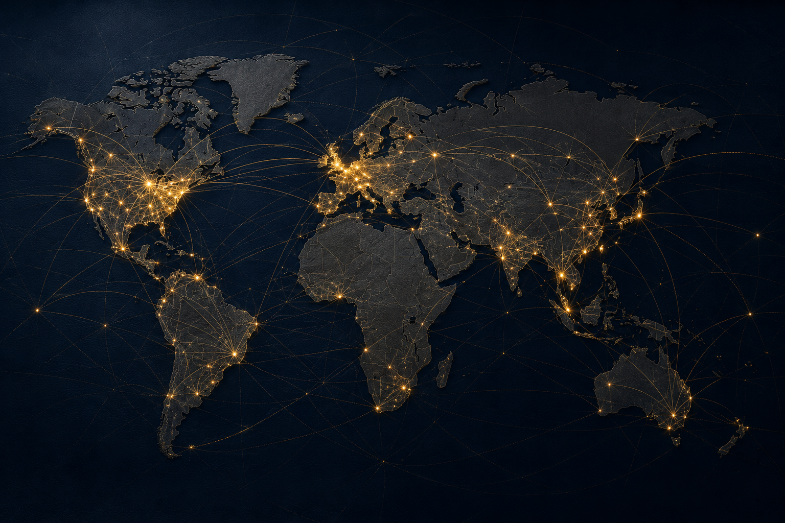
Controle de rotas
Brasil, México, Reino Unido, Alemanha, Finlândia, Noruega, Japão, Coreia do Sul, Costa Rica, Suécia e muitos outros destinos entrarão no arquivo conforme novas pesquisas, programas e transmissões forem preparados.
Consultar próximos embarquesPassport Files
Os primeiros arquivos editoriais apresentam artistas e festivais como documentos culturais. A fotografia abre a viagem; a investigação mostra o que existia além do nome conhecido.
Uma viagem pelo rock latino, pelas canções, pelo palco e pelas pessoas que ajudaram uma identidade mexicana a atravessar continentes.
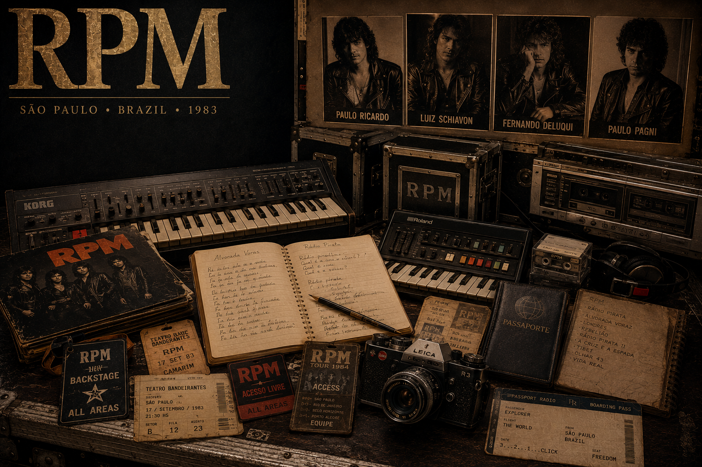
Tecnologia, tensão, sintetizadores e uma geração atravessada por músicas que documentaram o Brasil de seu tempo.
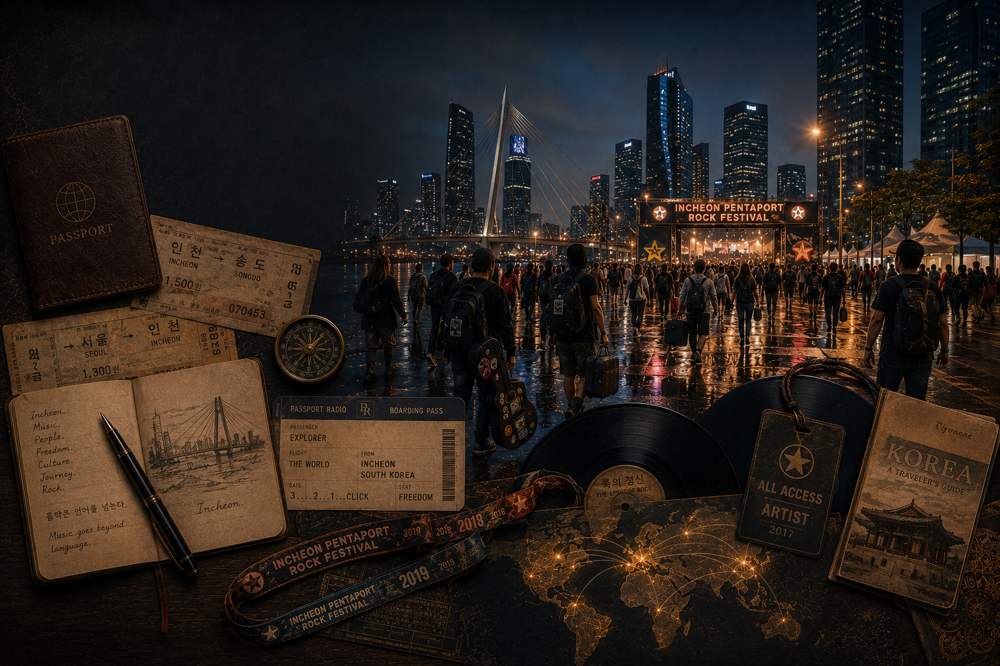
Muito além do K-pop: uma porta de entrada para bandas, público e cenas que mostram outra paisagem musical da Coreia do Sul.
Passport Collections
As coleções reúnem artistas, instrumentos, cenas, décadas e acontecimentos dentro de uma narrativa documental. Cada obra terá espaço real para respirar, sem ícones, desenhos ou enfeites infantis.
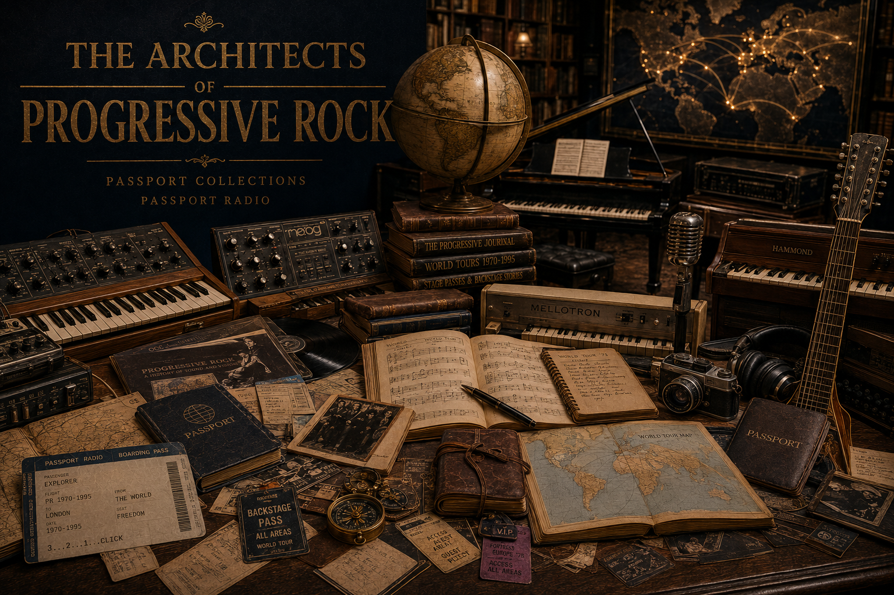
Passport Collection 001
Composição, tecnologia, improvisação, instrumentos e músicos que transformaram o rock em arquitetura sonora.
Consultar futura programação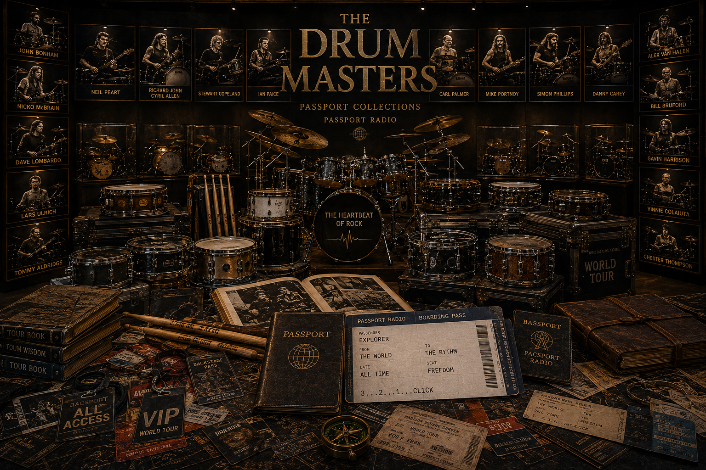
Passport Collection 002
John Bonham, Neil Peart, Stewart Copeland, Rick Allen e muitos outros músicos que transformaram o pulso da música em identidade.
Consultar futura programação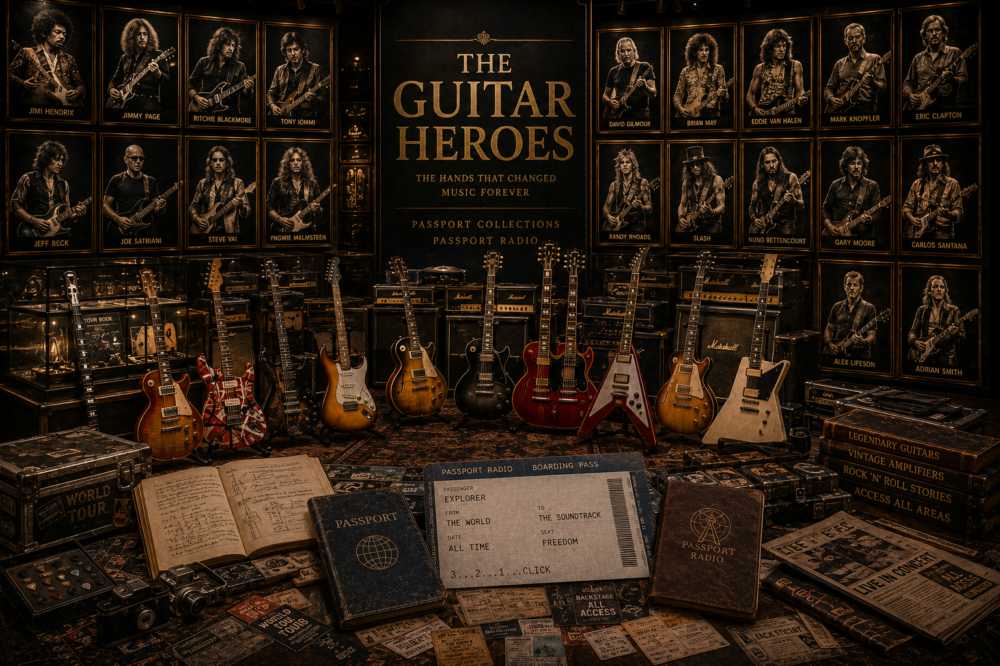
Passport Collection 003
Instrumentos, amplificadores, timbres, mãos e histórias que fizeram gerações inteiras quererem tocar.
Consultar futura programação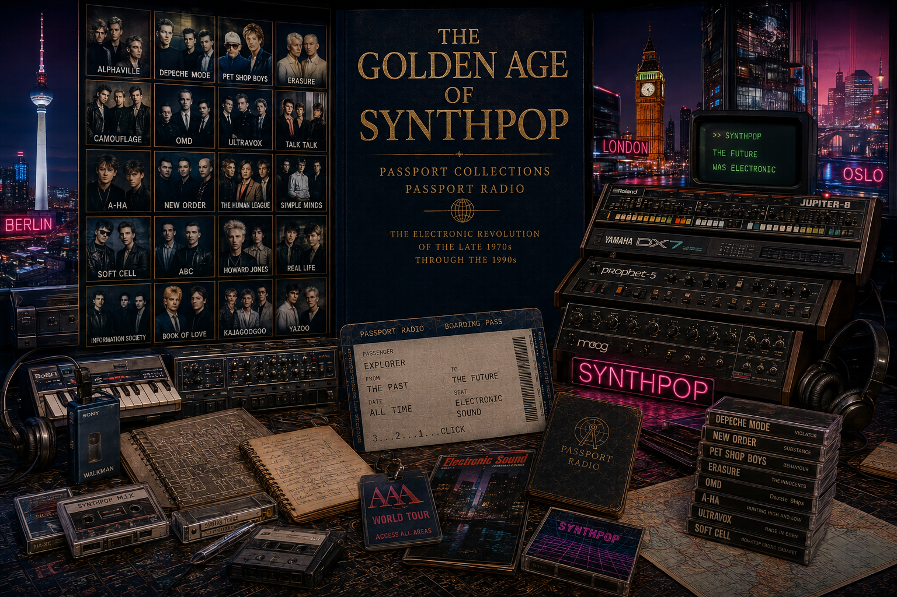
Passport Collection 004
Quando o futuro chegou por meio de sintetizadores, fitas, cidades noturnas, novas tecnologias e refrões inesquecíveis.
Consultar futura programação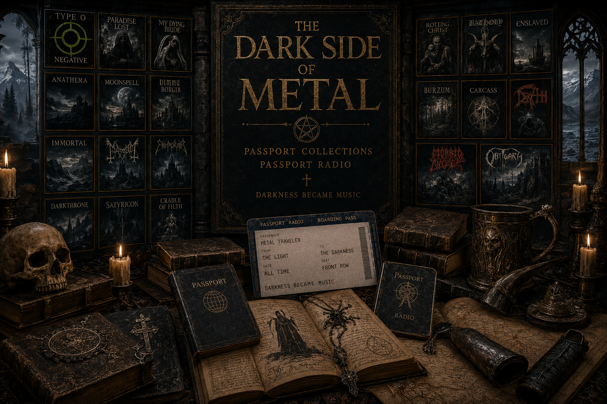
Passport Collection 005
Atmosferas, extremos, cenas regionais e movimentos que fizeram a escuridão ganhar linguagem musical própria.
Consultar futura programação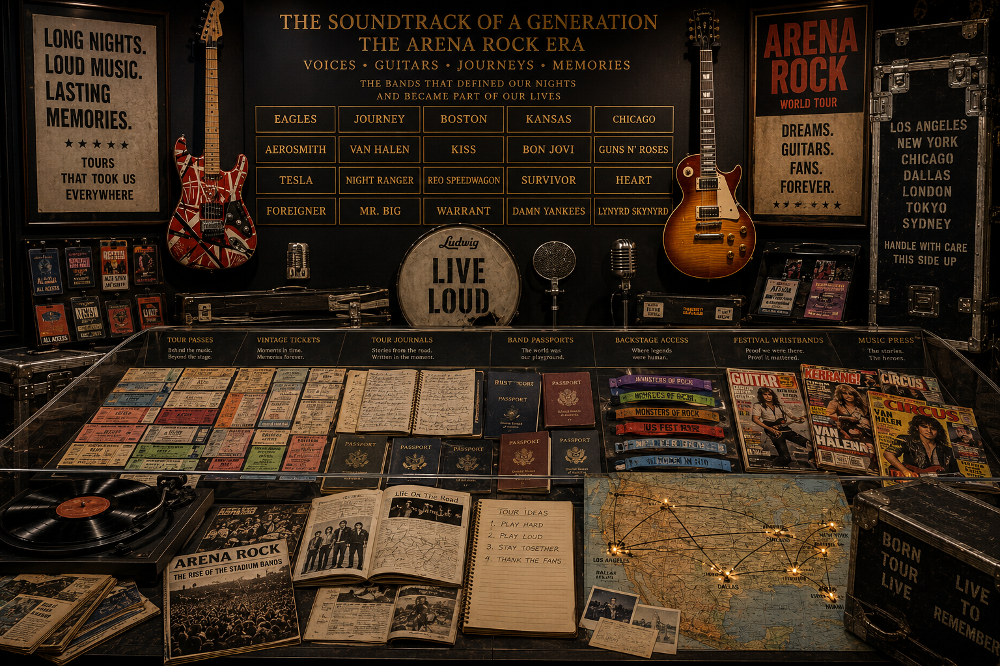
Passport Collection 006
Estradas, rádios, clubes, arenas e cidades que construíram diferentes capítulos da música norte-americana.
Consultar futura programaçãoFestival Archives
Os arquivos de festivais documentarão encontros, formações, bastidores, público, infraestrutura e apresentações que só poderiam ter acontecido naquele lugar e naquele momento.
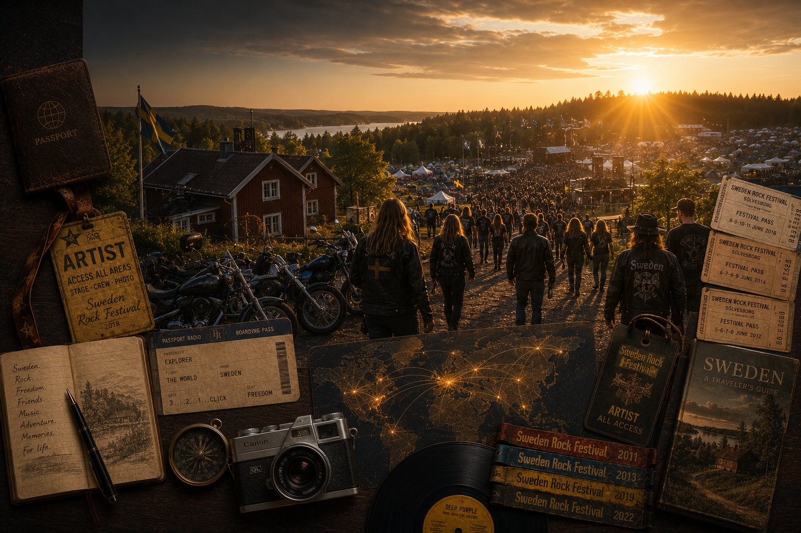
Uma reunião internacional de hard rock, heavy metal e memória musical apresentada com a dimensão de um grande arquivo de bordo.
Um ponto de encontro entre cenas asiáticas, artistas internacionais e um público que mostra como o rock continua atravessando fronteiras.
Hollywood Rock, Wacken Open Air, Monsters of Rock, Rock in Rio, Hellfest, Download, Tuska, Roskilde, Fuji Rock e muitos outros destinos entrarão nesta rota.
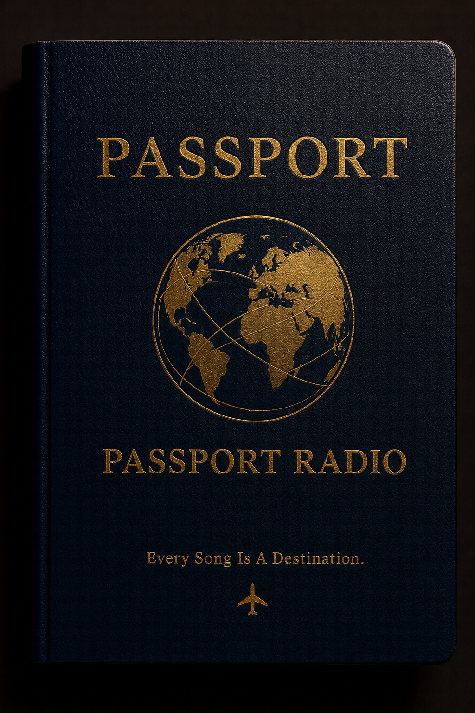
Seu próprio arquivo de viagem
O futuro Passaporte Musical reunirá carimbos ligados a programas, países, festivais, quizzes, coleções e descobertas. Cada passageiro poderá acompanhar sua própria viagem pelo acervo da Passport Radio.
Próxima rota